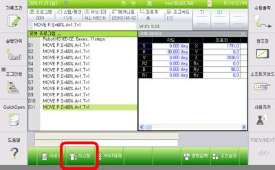
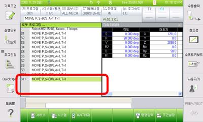
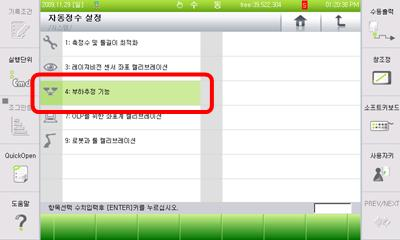
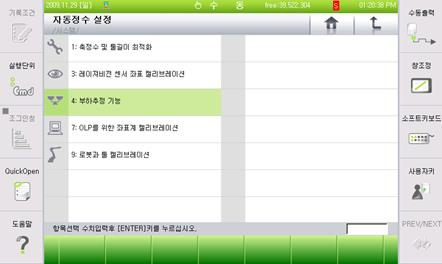
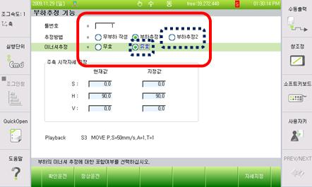
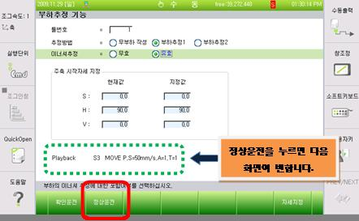
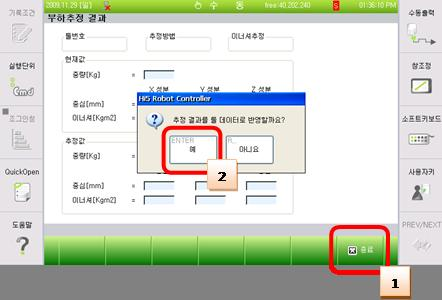

기존 에러코드: E0119 (○축) 모터 과부하
1.1.79.1. 개요
모터 또는 구동장치가 무리하게 동작되고 있습니다. 모터 또는 구동장치가 설정치 보다 무리하게 동작하게 되면, 서보보드는 에러를 감지하고 로봇을 정지시킵니다.
이 에러는 과부하 상태이면서 부하추정이 미 실시 되었을 때 발생합니다.
1.1.79.2. 원인 및 점검방법
|
(1) 부하추정을 실시하고, 에러가 다시 발생 되는지 확인하십시오. |
(1) 부하추정을 실시하고, 에러가 다시 발생 되는지 확인하십시오.
부하를 확인하는 방법에는 계측기를 사용하는 방법이 가장 정확하지만 여의치 않을 경우에는 제어기 기능 중 부하추정 기능을 사용하여 확인할 수 있습니다. 부하추정 기능은 로봇 끝단에 설치되어 있는 툴에 대한 부분만 추정 가능합니다.
부하 추정 방법은 다음과 같습니다.
n 부하추정 기능으로 들어갑니다.
『[F2]: 시스템』 → 『6: 자동정수 설정』 → 『4: 부하추정 기능』



n 부하추정 기능에서 툴 번호, 추정방법 및 이너셔 추정여부를 선택합니다.

Ø 부하추정 후 저장할 툴 번호
Ø 추정 방법: 부하추정 2
Ø 이너셔 추정: 유효

n 정상 운전을 클릭하여 수행합니다.
모터 On 스위치를 누르고 데드맨을 잡은 후 정상운전을 클릭합니다.

부하 추정 결과를 등록할지 결정합니다.
n 부하 추정 운전이 완료되면 추정 결과가 화면에 보여집니다.

여기서 종료 버튼을 누르면 결과를 반영할 것인지 확인 창이 나타나고 ‘예’를 누르면 저장이 됩니다.